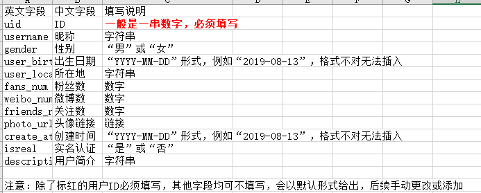
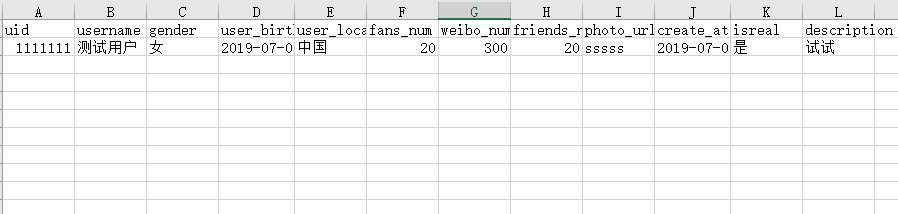

微博人物心理模型刻画及业务应用
个体心理侧写
群体心理侧写
特定事件人群分析
政策法规舆情分析
×
温馨提示
个体列表
搜索
高级搜索
用户入库
用户导出
黑暗人格：
马基雅维利主义——
0
1
2
3
4
5
精神病态——
0
1
2
3
4
5
自恋——
0
1
2
3
4
5
大五人格：
外倾性——
0
1
2
3
4
5
神经质——
0
1
2
3
4
5
开放性——
0
1
2
3
4
5
宜人性——
0
1
2
3
4
5
尽责性——
0
1
2
3
4
5
高
低
排序：
马基雅维利主义
精神病态
自恋
外倾性
神经质
开放性
宜人性
尽责性
×
添加入库用户
批量导入
ID：
昵称：
性别 ：
女
男
出生日期：
所在地：
粉丝数：
微博数：
关注数：
头像链接：
创建时间：
实名认证：
否
是
用户简介：
入库
入库列表
EXCEL用户导入样例图

EXCEL用户导出样例图

![]() 微博人物心理模型刻画及业务应用
微博人物心理模型刻画及业务应用